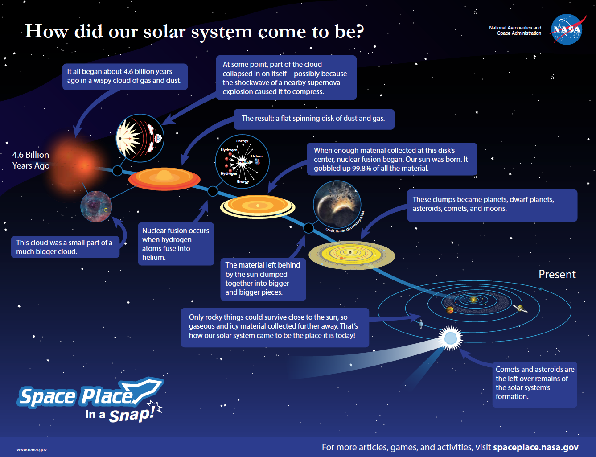
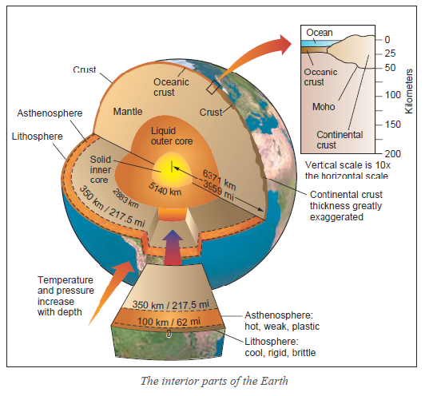
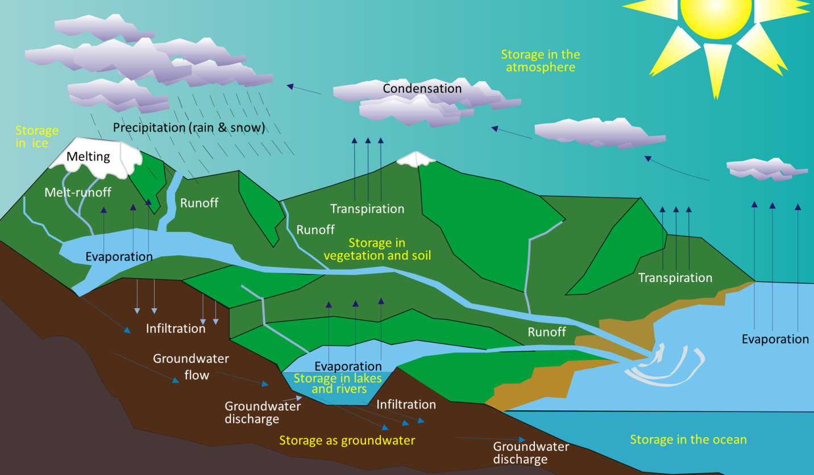

Origin of the Solar System
The Solar Nebula Hypothesis explains the formation of our solar system about
4.6 billion years ago. It all began with a massive cloud of gas and dust.
A nearby supernova explosion caused this cloud to collapse under its own gravity, creating a
spinning protoplanetary disk.
At the center of this disk, the materials compressed, and nuclear fusion ignited, forming
our Sun. The leftover material began clumping together to form planets, moons, and other
celestial objects. Key processes include:
- Frost Line: Rocky planets formed close to the Sun, while gas and ice giants formed farther out.
- Comets and Asteroids: Remnants of the solar system's formation still exist today.
This process gave us the eight planets, numerous moons, and other objects that make up our
solar system.

Interior of the Earth
Earth's interior is divided into layers that differ in composition, and temperature. These layers
formed as the young Earth cooled and materials separated by density.
Key components of Earth's interior:
- Crust: The thin, outermost layer composed of continental and oceanic crust.
- Mantle: A thick layer of semi-solid rock. The upper part includes the lithosphere (cool, rigid) and
the asthenosphere (hot, weak, and plastic).
- Core:
- Outer Core: Liquid layer responsible for generating Earth's magnetic field.
- Inner Core: Solid, dense, and composed primarily of iron and nickel.
As you move deeper into the Earth, temperature and pressure increase. This structure influences
everything from plate tectonics to volcanic activity.

Origin of Oceans
The water cycle ties directly to the origin of Earth's oceans. Billions of years ago, Earth's oceans formed as the planet cooled, allowing water vapor from volcanic eruptions to condense into liquid water. Over time, liquid water accumulated in basins, forming the first oceans. The water cycle began as Earth's temperature stabilized, redistributing water between the atmosphere, land, and oceans.
Earth's oceans formed as the planet cooled after its formation. The primary source of water were:
- Volcanic Outgassing: Early volcanic eruptions released water vapor, which condensed
as Earth cooled to form liquid water.
Water cycle which describes how water moves through Earth's systems.
- Precipation: replenishes water on land and in rivers, which flow into oceans.
- Evaporation and transpiration: return water vapor to the atmosphere, where it condenses into clouds and continues the cycle.
- Groundwater: infiltration and discharge also connect underground storage to surface systems, completing the cycle of water movement and storage.

Download PowerPoint
For more info and visual notes , click below to download the powerpoint
PowerPoint